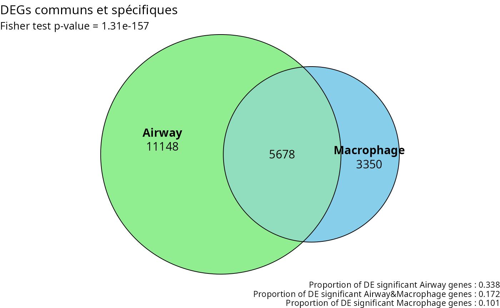
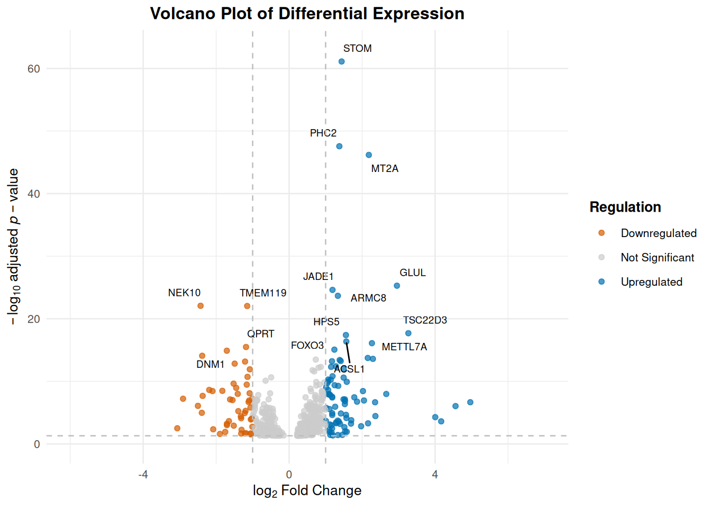
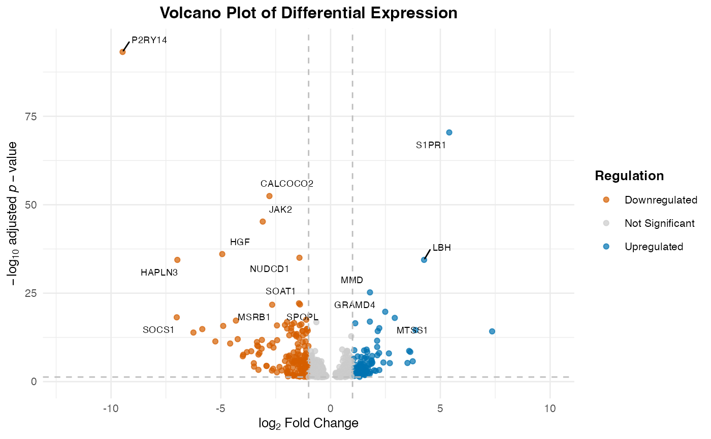

annotation_air <- "dex"
annotation_mac <- "condition_name"
diffexpMethod <- "limma"
Here is an example of an application for the function plot_venn. For this script, we used 2 different public datasets airway and macrophage.
If you want to use this notebook for your projects, it is available here
The airway dataset provides a gene expression dataset derived from human bronchial epithelial cells, treated or not with dexamethasone (a corticosteroid).
The macrophage dataset provides bulk RNA-seq count data from human monocyte-derived macrophages. These cells were either left untreated or stimulated with interferon-gamma (IFN-γ).
An experimental condition was applied to each of these cells, left unstimulated, stimulated with IFN-gamma, infected with SL1344, or pre-treated with IFN-g and then infected with SL1344. For this comparison, we will focus on the samples of the 2 first conditions (IFN-g, naive).
To compare the datasets, we will do the pre-processing part of the sup and unsup analysis, until the diffexp.
Import libraries
library(airway)
library(SummarizedExperiment)
library(macrophage)
library(biomaRt)
library(ggplot2)
library(CAIBIrnaseq)Load datasets
Even if the datasets are globally build the same way, the names of the variables are not exactly the same, so if we want to keep the same code, we need to redefine a bit the variables.
If you want to know what are the used variables in this part, run this command line : colnames(SummarizedExperiment::rowData(exp_data))
You should have these variables (with these exact same names):
- gene_name : The commonly used symbol or name for the gene (e.g., A1BG).
- gene_id : A unique and stable identifier for the gene, often from databases like Ensembl (e.g., ENSG00000141510).
- gene_length_kb : The length of the gene measured in kilobases
- gene_description : A brief textual summary of the gene’s function or characteristics, often pulled from annotation databases.
- gene_biotype : A classification of the gene based on its biological function or transcript type, such as protein_coding, lncRNA, or pseudogene.
If not, you should look at how your dataset is defined. You might need to run some command line as the following ones:
rowData(airway)$gene_length_kb <-(rowData(airway)$gene_seq_end - rowData(airway)$gene_seq_start) / 1000
mart_air <- useEnsembl("ensembl", dataset = "hsapiens_gene_ensembl")
gene_ids_air <- rowData(airway)$gene_id
annot_air <- getBM(attributes = c("ensembl_gene_id", "description"),
filters = "ensembl_gene_id",
values = gene_ids_air,
mart = mart_air)
matched_air <- match(rowData(airway)$gene_id, annot_air$ensembl_gene_id)
rowData(airway)$gene_description <- annot_air$description[matched_air]
rowData(macrophage)$gene_length_kb <- width(rowRanges(macrophage)) / 1000
rownames(macrophage) <- sub("\\..*$", "", rowData(macrophage)$gene_id)
rowData(macrophage)$gene_id <- sub("\\..*$", "", rowData(macrophage)$gene_id)
rowData(macrophage)$gene_name <- rowData(macrophage)$SYMBOL
macrophage <- macrophage[!is.na(rowData(macrophage)$SYMBOL), ]
mart_mac <- useEnsembl("ensembl", dataset = "hsapiens_gene_ensembl")
annot_mac <- getBM(
attributes = c("ensembl_gene_id", "gene_biotype", "description"),
filters = "ensembl_gene_id",
values = unique(rowData(macrophage)$gene_id),
mart = mart_mac
)
# Correspondance entre gene_id et annot_mac
match_mac <- match(rowData(macrophage)$gene_id, annot_mac$ensembl_gene_id)
# Ajouter les colonnes dans rowData
rowData(macrophage)$gene_biotype <- annot_mac$gene_biotype[match_mac]
rowData(macrophage)$gene_description <- annot_mac$description[match_mac]Pre-processing
Most datasets use ensembl gene ID by default after alignment, so this step rebases the expression data to gene names. This ensures consistency in naming for downstream analyses.
airway <- rebase_gexp(airway, keep_cols = c("gene_name", "gene_id",
"gene_biotype", "gene_length_kb"))
macrophage <- rebase_gexp(macrophage, keep_cols = c("gene_name", "gene_id",
"gene_biotype", "gene_length_kb"))Filter
Here, we filter out genes expressed in too few samples or with very low counts. This removes noise from the data and focuses on meaningful gene expressions.
airway <- filter_gexp(airway,
min_nsamp = 1,
min_counts = 1)
macrophage <- filter_gexp(macrophage,
min_nsamp = 1,
min_counts = 1)Quality Control
Visualization of the filtering process to ensure the criteria applied align with the dataset’s characteristics:
colData(airway)$sample_id <- colnames(airway)
plot_qc_filters(airway)
colData(macrophage)$sample_id <- colnames(macrophage)
plot_qc_filters(macrophage)Normalize
Here, we apply a normalization to the expression data, making samples comparable by reducing variability due to technical differences. For datasets with few samples, rlog is the preferred normalization and when more samples are present, vst is applied.
airway <- normalize_gexp(airway)
assay(macrophage) <- round(assay(macrophage))
macrophage <- normalize_gexp(macrophage)PCA
Principal component analysis (PCA) identifies the major patterns in the dataset. These patterns help explore similarities or differences among samples based on gene expression.
#|message: false
metadata(airway)[["pca_res"]] <- pca_gexp(airway)
annotations <- setdiff(annotation_air, c("exp_cluster", "path_cluster"))
plot_pca(airway, color = annotation_air)
metadata(macrophage)[["pca_res"]] <- pca_gexp(macrophage)
annotations <- setdiff(annotation_mac, c("exp_cluster", "path_cluster"))
plot_pca(macrophage, color = annotation_mac)Diffexp
Differential expression analysis is a key step in RNA-seq data interpretation. It aims to identify genes whose expression levels significantly change between experimental conditions—in this case, between treated and untreated airway samples, and between IFNg-stimulated and naive macrophages. By statistically testing gene expression differences, this analysis highlights biologically relevant genes that may be involved in specific cellular responses or disease mechanisms. .
library(edgeR)
colData(airway)$dex <- factor(colData(airway)$dex)
colData(airway)$dex <- factor(colData(airway)$dex, levels = c("untrt", "trt"))
diffexp_air <- diffExpAnalysis(airway, design = annotation_air, contrasts = "dex_trt_vs_untrt")
colData(macrophage)$condition_name <- factor(colData(macrophage)$condition_name)
colData(macrophage)$condition_name <- factor(colData(macrophage)$condition_name, levels = c("IFNg", "naive"))
diffexp_mac <- diffExpAnalysis(macrophage, design = annotation_mac, contrasts = "condition_name_naive_vs_IFNg")Venn Diagram
Once the diffexp done, we can plot the venn diagram. Since the datasets are not directly related, it could be interesting to see if there are still similarities. The comparison can be made between genes, pathways, …
If there are similarities, it can means that some biological processes are activated for different condition types.
This diagram show us how much genes are unique to one dataset, and which are in common. The fisher test value corresponds to the reliability of this analysis. The nearer it is to 0, the most significant this analysis is.
#|message: false
# Exemple : extraction des degs_airgènes DE significatifs
degs_air <- rownames(diffexp_air[diffexp_air$padj < 0.05, ]) # you can change the threshold 'padj'
degs_mac <- rownames(diffexp_mac[diffexp_mac$padj < 0.05, ])
# universe_size <- length(union(degs_air, degs_mac))
universe_size <- length(unique(rownames(diffexp_air)))
# Diagramme de Venn
plot_venn(degs_air, degs_mac, universe_size,
v1_name = "Airway", v2_name = "Macrophage",
fills = c("lightgreen", "skyblue"),
title = "DEGs communs et spécifiques")
trt <- airway[,colData(airway)$dex == "trt"]Additional analyses
Collections
The airway and macrophage datasets have some common genes. We can visualize it with the venn diagram. Now that we know that, maybe we can further analyse whether it is ‘random’ or something about a biological process.
inter <- intersect(degs_air, degs_mac)
msigdbr::msigdbr_collections() |>
kableExtra::kbl() |>
kableExtra::kable_styling() |>
kableExtra::scroll_box(height = "300px")| db_version | gs_collection | gs_subcollection | gs_collection_name | num_genesets |
|---|---|---|---|---|
| 2026.1.Hs | C1 | Positional | 302 | |
| 2026.1.Hs | C2 | CGP | Chemical and Genetic Perturbations | 3555 |
| 2026.1.Hs | C2 | CP | Canonical Pathways | 19 |
| 2026.1.Hs | C2 | CP:BIOCARTA | BioCarta Pathways | 292 |
| 2026.1.Hs | C2 | CP:KEGG_LEGACY | KEGG Legacy Pathways | 186 |
| 2026.1.Hs | C2 | CP:KEGG_MEDICUS | KEGG Medicus Pathways | 658 |
| 2026.1.Hs | C2 | CP:PID | PID Pathways | 196 |
| 2026.1.Hs | C2 | CP:REACTOME | Reactome Pathways | 1839 |
| 2026.1.Hs | C2 | CP:WIKIPATHWAYS | WikiPathways | 925 |
| 2026.1.Hs | C3 | MIR:MIRDB | miRDB | 2377 |
| 2026.1.Hs | C3 | MIR:MIR_LEGACY | MIR_Legacy | 221 |
| 2026.1.Hs | C3 | TFT:GTRD | GTRD | 506 |
| 2026.1.Hs | C3 | TFT:TFT_LEGACY | TFT_Legacy | 610 |
| 2026.1.Hs | C4 | 3CA | Curated Cancer Cell Atlas gene sets | 148 |
| 2026.1.Hs | C4 | CGN | Cancer Gene Neighborhoods | 427 |
| 2026.1.Hs | C4 | CM | Cancer Modules | 431 |
| 2026.1.Hs | C5 | GO:BP | GO Biological Process | 7538 |
| 2026.1.Hs | C5 | GO:CC | GO Cellular Component | 1080 |
| 2026.1.Hs | C5 | GO:MF | GO Molecular Function | 1872 |
| 2026.1.Hs | C5 | HPO | Human Phenotype Ontology | 5793 |
| 2026.1.Hs | C6 | Oncogenic Signature | 189 | |
| 2026.1.Hs | C7 | IMMUNESIGDB | ImmuneSigDB | 4872 |
| 2026.1.Hs | C7 | VAX | HIPC Vaccine Response | 347 |
| 2026.1.Hs | C8 | Cell Type Signature | 866 | |
| 2026.1.Hs | C9 | Computational Perturbation Signature | 62 | |
| 2026.1.Hs | H | Hallmark | 50 |
Volcano
The 2 volcano plots show us top 15 differential expressed genes.
#|message: false
diffexp_air$gene <- rownames(diffexp_air)
diffexp_mac$gene <- rownames(diffexp_mac)
# Gènes significatifs (par exemple padj < 0.05)
sig_air <- diffexp_air[diffexp_air$padj < 0.05, ]
sig_mac <- diffexp_mac[diffexp_mac$padj < 0.05, ]
# Gènes en commun (par nom de gène)
common_genes <- intersect(sig_air$gene, sig_mac$gene)
# Sous-ensemble des jeux avec uniquement les gènes communs
common_air <- diffexp_air[diffexp_air$gene %in% common_genes, ]
common_mac <- diffexp_mac[diffexp_mac$gene %in% common_genes, ]
plot_exp_volcano(common_air, 15)
plot_exp_volcano(common_mac, 15)
Heatmaps
dir.create("results", "airway", "pathways")
dir.create("results", "macrophage", "pathways")
pathway_collections <- c("CP:KEGG_MEDICUS")
pathways <- get_annotation_collection(pathway_collections,
species = "human")
scores_airway <- score_pathways(airway, pathways, verbose = FALSE)
scores_macrophage <- score_pathways(macrophage, pathways, verbose = FALSE)
# Identifier les pathways communs
common_paths <- intersect(rownames(scores_airway), rownames(scores_macrophage))## Warning in prep_scores_hm(exp_data, progeny_scores): 'sample_id' already exists
# Définir un ordre commun basé sur les scores moyens dans airway
order_common <- rowMeans(scores_airway[common_paths, , drop = FALSE]) |>
sort(decreasing = TRUE) |>
names()
# Re-générer les heatmaps dans le même ordre
collections <- pathway_collections |>
paste(collapse = "_") |>
stringr::str_remove("\\:")
# Réordonner les matrices selon cet ordre
scores_airway <- scores_airway[order_common, ]
scores_macrophage <- scores_macrophage[order_common, ]
# Remplacer les anciennes matrices dans les objets
metadata(airway)[["pathway_scores"]] <- scores_airway
metadata(macrophage)[["pathway_scores"]] <- scores_macrophage
dir.create("results", "airway", "pathways")
dir.create("results", "macrophage", "pathways")
# airway
plt_air <- plot_pathway_heatmap(airway, annotations = annotation_air,
fwidth = 9,
cluster_rows = FALSE,
fname = stringr::str_glue("results/airway/pathways/hm_paths_{collections}_top20_aligned.pdf"))Called from: prep_scores_hm(exp_data, pathway_scores, pathways)
debug: samp_annot <- as.data.frame(colData(exp_data))
debug: if ("sample_id" %in% colnames(samp_annot)) {
warning("'sample_id' already exists in colData and will be overwritten.")
samp_annot <- samp_annot[, colnames(samp_annot) != "sample_id"]
}
debug: warning("'sample_id' already exists in colData and will be overwritten.")debug: samp_annot <- samp_annot[, colnames(samp_annot) != "sample_id"]
debug: samp_annot <- rownames_to_column(samp_annot, "sample_id")
debug: path_table <- as.data.frame(t(pathway_scores[feats, , drop = FALSE]))
debug: if ("sample_id" %in% colnames(path_table)) {
warning("'sample_id' already exists in `pathway_scores` and will be overwritten.")
path_table <- path_table[, colnames(path_table) != "sample_id"]
}
debug: path_table <- rownames_to_column(path_table, "sample_id")
debug: path_table <- dplyr::left_join(path_table, samp_annot, by = "sample_id")
debug: hm_data <- list(table = path_table, colv = "sample_id", rowv = feats)
debug: return(hm_data)
# macrophage
plt_mac <- plot_pathway_heatmap(macrophage, annotations = annotation_mac,
fwidth = 9,
cluster_rows = FALSE,
show_rownames = FALSE,
fname = stringr::str_glue("results/macrophage/pathways/hm_paths_{collections}_top20_aligned.pdf"))Called from: prep_scores_hm(exp_data, pathway_scores, pathways)
debug: samp_annot <- as.data.frame(colData(exp_data))
debug: if ("sample_id" %in% colnames(samp_annot)) {
warning("'sample_id' already exists in colData and will be overwritten.")
samp_annot <- samp_annot[, colnames(samp_annot) != "sample_id"]
}
debug: warning("'sample_id' already exists in colData and will be overwritten.")debug: samp_annot <- samp_annot[, colnames(samp_annot) != "sample_id"]
debug: samp_annot <- rownames_to_column(samp_annot, "sample_id")
debug: path_table <- as.data.frame(t(pathway_scores[feats, , drop = FALSE]))
debug: if ("sample_id" %in% colnames(path_table)) {
warning("'sample_id' already exists in `pathway_scores` and will be overwritten.")
path_table <- path_table[, colnames(path_table) != "sample_id"]
}
debug: path_table <- rownames_to_column(path_table, "sample_id")
debug: path_table <- dplyr::left_join(path_table, samp_annot, by = "sample_id")
debug: hm_data <- list(table = path_table, colv = "sample_id", rowv = feats)
debug: return(hm_data)
require(patchwork)
require(ggheatmapper)
ggsave("results/heatmap_big.png", align_heatmaps(plt_air, plt_mac), width = 16, height = 10, dpi = 300)Click to zoom in :
{kind=link}